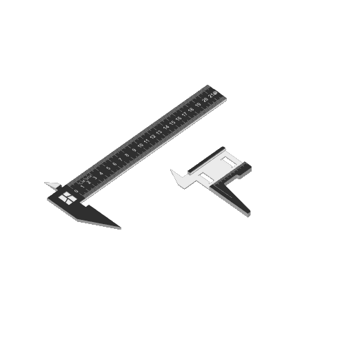
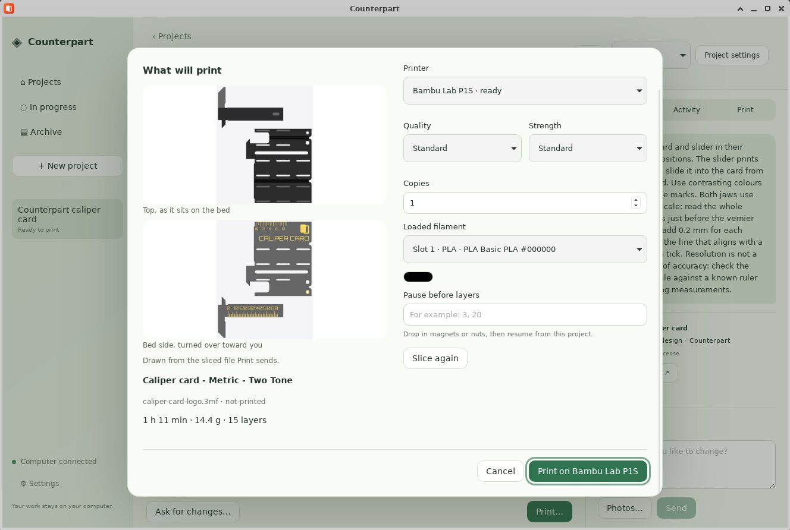
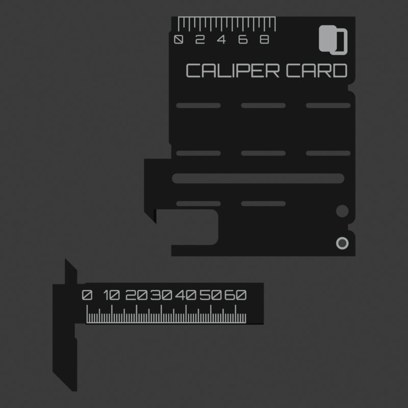

Mac
Apple silicon · macOS 27 or newer
Signed and notarized. It updates itself.
Something’s missing, broken, or needs a mount, a hook or a cover. Scan the object with your phone, describe the part you need — “a hook that fits my desk edge” — or paste a link to a published model. Counterpart designs it or cleans it up, shows you exactly what will print, and prints it on your printer.

Use one, or mix them in the same project. The more it knows about what the part has to fit, the closer the first try is.

Walk around it with an iPhone or iPad Pro, and add close-ups. On Android, walk around it while Counterpart takes the photos.
Counterpart cleans up the scan, fills what the scanner missed, and makes it printable.

“A hanger for my AirPods Max that clips to my desk.” Add photos or a scan, or nothing when the product's sizes are published.
Counterpart designs the part, and asks for a close-up when it can't see something.

A model on MakerWorld, Printables or Thingiverse, with any choices in plain words: “the 150 mm one, in black and yellow”.
Counterpart prints the designer's own file, credits them, and changes only what you ask.
Before anything prints, the Print sheet shows the print itself, prepared for your printer layer by layer (sliced): the top, as it sits on the bed, and the bed side, turned over toward you. Print sends exactly that.



Each one started as a sentence, a photo or a link, and is in use now.
“A hanger for my AirPods Max that won't stretch the mesh, and clips to my Uplift desk.” It holds them by the ear cups, so the headband never takes the weight.
“Something that attaches this microphone to my monitor, both pictured here.” Two photos, one print.

“A guitar pick, medium flex. Have it say Vivi, black pick, yellow writing.”

“Use this caliper card exactly, but add the logo.” The designer's file and settings, one change.
Counterpart runs on a Mac or Linux PC: it keeps your projects, designs your parts, cleans up your scans and runs your printer. Your phone or tablet connects to that computer to scan, send, check and print. The setup guide walks through it.
Scan with LiDAR, send photos, descriptions and links, answer questions, print and follow the print, with notifications, a Live Activity and widgets.


Projects sit beside the one you're looking at, with a larger model. Drag photos in from Files or Safari. An iPad Pro with LiDAR can scan.
Lives in the menu bar, with a window for your projects and printers. Blender and Autodesk Fusion are optional, for cleanup and design.


Sends descriptions, photos, links and walk-around scans, follows the work and the print, with Pause, Stop and notifications.

Keeps your projects, does the design and cleanup, and runs your printer, just like the Mac.
Bambu Lab, Prusa, Klipper, OctoPrint, Duet, Repetier or Creality. When you add a printer in Settings › Printers, Counterpart installs the free printer software it needs: bambu-printer-mcp for Bambu Lab, or mcp-3D-printer-server for the rest.
Your phone connects straight to your computer, so you can scan, send and print from it. There's no account to make, and you only connect once.
With the same Apple Account on your iPhone or iPad and your Mac, they find each other through iCloud. Nothing to scan.
Show the code on the computer: Add a Phone on the Mac, or Settings on Linux. Point your phone's camera at it.
On the same Wi-Fi, both screens show the same six-digit code. Check it matches, then allow the phone.
No accounts, and no Counterpart servers holding your projects.
The full guide, with search, is on the Help page.
You need one computer: an Apple silicon Mac, or a PC with Ubuntu 26.04. iPhone and iPad connect to a Mac; Android connects to either.
Make sure Counterpart is open on the computer and both are on the same Wi-Fi. Otherwise connect with the QR code: Add a Phone on the Mac, or Settings on Linux.
Update your printer software in Settings › Printers. On the Mac and iPhone, What will print arrives with the next Counterpart update.
Open the project: it shows what the printer said. If the printer shows an error on its own screen, clear it there, then print again.
To your own computer. Privacy has the details.
Counterpart includes these starters from MakerWorld designers.

by Kass 3D · MakerWorld
A steady orbit around your object. Clamp your phone to the arm and move it around for a clean scan. Six plates, then a quick assembly.
by 3D Print Masters Hub · MakerWorld
Measure larger parts and depths. The long two-colour caliper, with its optional depth gauge.
Install it on your computer first, then connect your phone. Counterpart is in beta on every platform.
Apple silicon · macOS 27 or newer
Signed and notarized. It updates itself.
Android 8 or newer
Allow your browser to install the app when Android asks.
Ubuntu 26.04 · x86_64
Open the .deb to install it, or use the AppImage.
iOS 27 or iPadOS 27 or newer
Through TestFlight, as soon as Apple approves the beta.